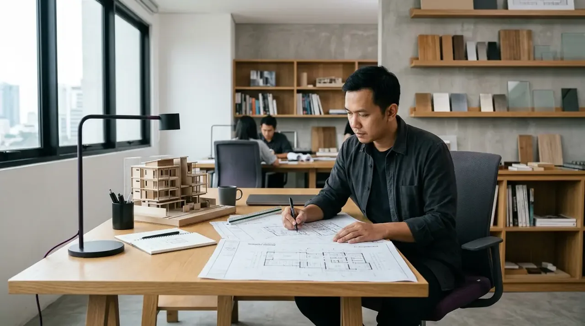

Jasa Arsitek
Jasa Arsitek & Perancangan Bangunan Profesional
Mengubah visi dan kebutuhan Anda menjadi rancangan arsitektur yang estetik, fungsional, hemat energi, dan siap dibangun dengan gambar kerja teknis (DED) berstandar presisi.

Ruang Lingkup
Ruang Lingkup Layanan Perancangan Arsitektur
Tahapan desain komprehensif dari eksplorasi konsep hingga paket dokumen siap bangun.
Konsultasi Konsep & Analisis Tapak
Diskusi kebutuhan ruang, preferensi gaya arsitektur, orientasi matahari/angin mikro, dan regulasi zonasi daerah (GSB/KDB).
Perencanaan Tata Ruang & Denah 2D
Pengembangan denah fungsional yang ergonomis, efisien dalam sirkulasi, dan mengoptimalkan zonasi ruang secara maksimal.
Visualisasi 3D Photorealistic & Fasad
Pembuatan render visual 3D eksterior dan interior resolusi tinggi dengan material realistis dan pencahayaan akurat.
Gambar Kerja Teknis (DED) & RAB
Penyusunan dokumen detail arsitektur, struktur pembesian SNI, instalasi MEP lengkap, dan RAB siap bangun/izin PBG.
Portofolio Terkait
Contoh Hasil Pekerjaan
Dokumentasi nyata hasil pelaksanaan proyek yang telah kami selesaikan dengan standar kualitas tinggi.
Keunggulan
Mengapa Memilih Layanan Kami?
Komitmen kami memberikan kenyamanan dan kepastian hasil terbaik untuk setiap proyek Anda.
RAB Transparan & Terperinci
Setiap rincian volume material dan upah kerja tercantum jelas tanpa biaya tersembunyi, sehingga anggaran Anda terkontrol penuh.
Garansi Pemeliharaan Resmi
Proyek dilindungi oleh surat perjanjian kerja resmi (SPK) dan jaminan garansi masa pemeliharaan untuk kepastian kualitas.
Tenaga Ahli Berpengalaman
Dikelola oleh tim arsitek, site engineer, dan mandor ahli bersertifikasi yang siap memastikan konstruksi presisi dan tepat waktu.
Mulai Proyek Anda
Punya Rencana Membangun atau Konsultasi Proyek?
Konsultasikan kebutuhan Anda sekarang bersama tim ahli Kontraktor Bangunan. Kami siap memberikan solusi terbaik yang sesuai dengan anggaran Anda.